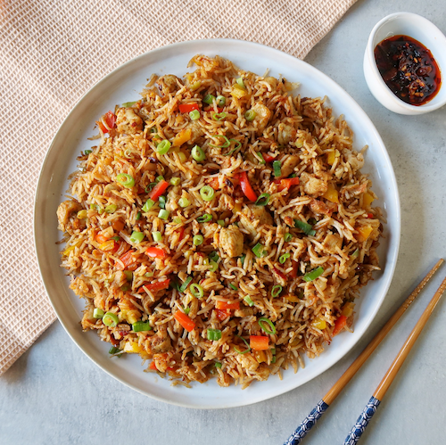

Antero's Creamy Chicken

So this is a simple dish that is easy to make and works perfectly as a meal prep type of thing.
It can be easily varied with different spices and added ingrediendts.
Ingredients
- 3,5 dl full fat cream
- 400g chicken (either brests or pre-chopped
- rice
- canned, peeles tomatoes
- 2 onions
- lots of garlic
- tons of curry powder
- salt
Time
Prep for about 10min, cooking time 25-35min
Instructions
- Take the chicken out about 30 minutes before cooking. If you bought breasts, cut the meat to strips.
- Chop the onions and garlic
- Add oil to the pan, turn the heat up and start frying the chicken
- Add the onions and garlic and spices
- Fry until chicken surfaces have begun to cook all over
- Add the cream, canned tomatoes and rice
- Turn the head down so that the liquid is boiling slightly
- Add salt and some water, if needed
- Let simmer until rice is cooked. At the end, there should be some liquid left but most of it has dissapated / been absorbed by the rice.
- Serve with Coca-Cola